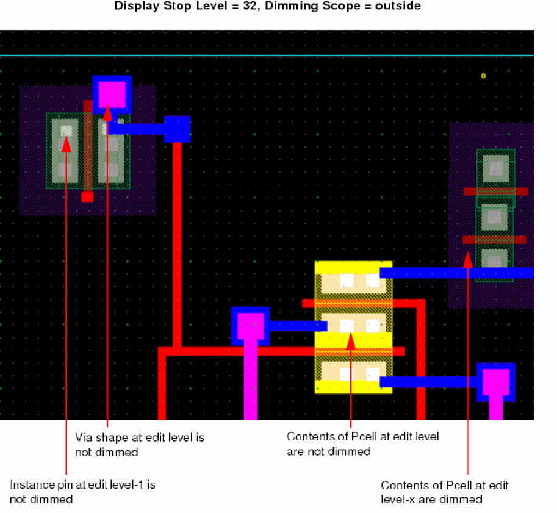
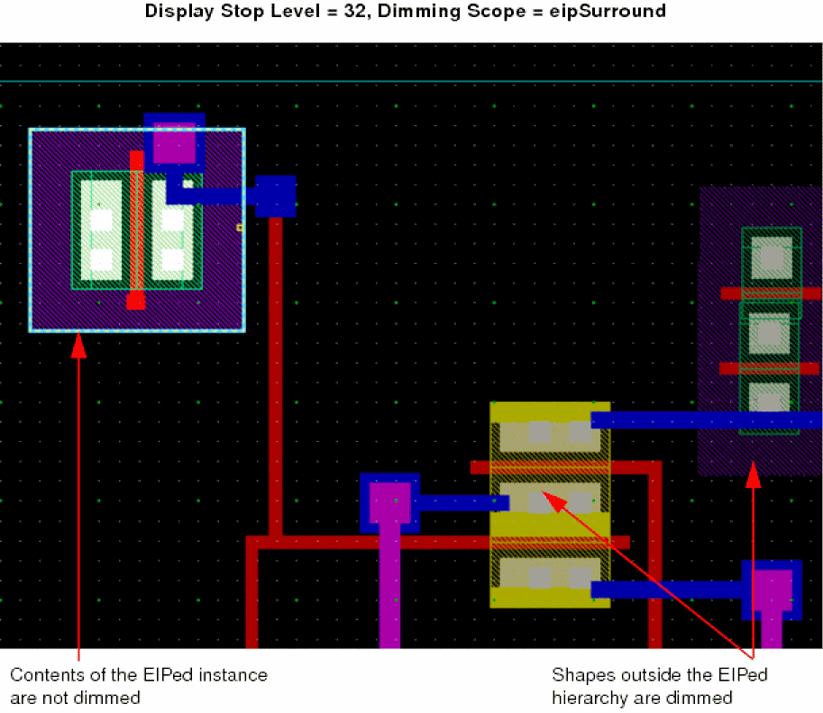
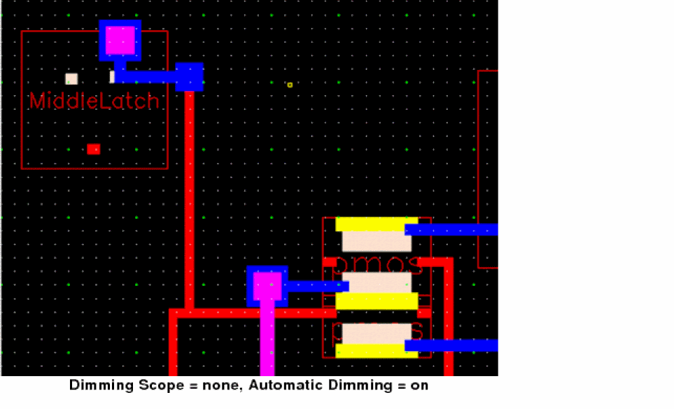
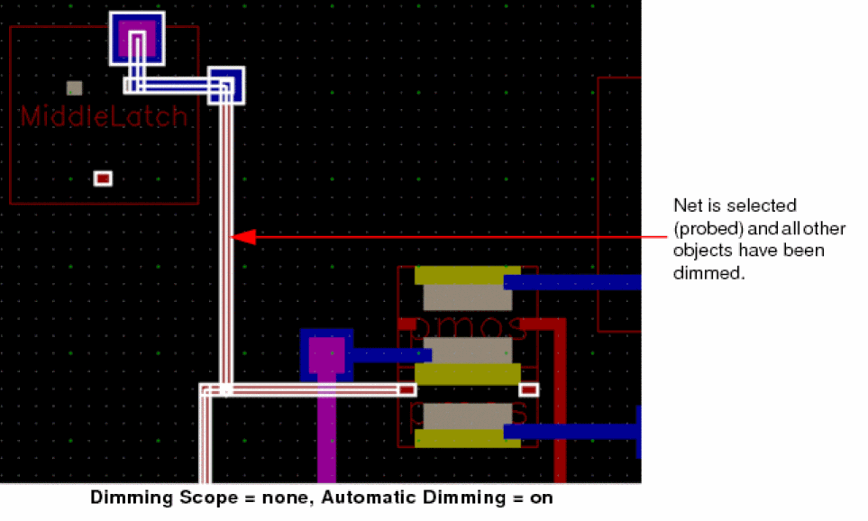
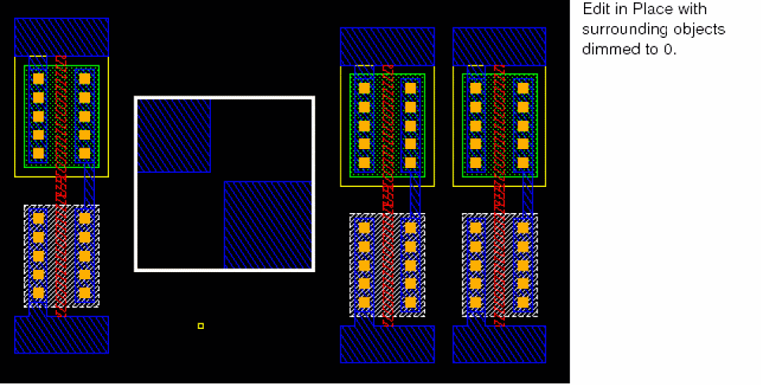
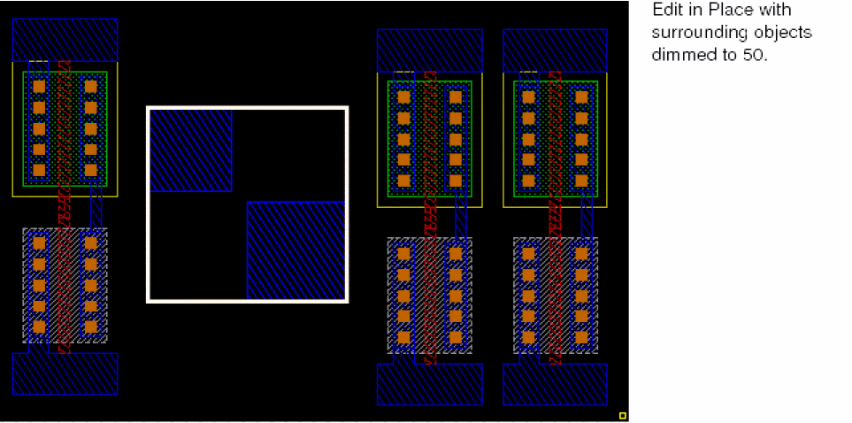
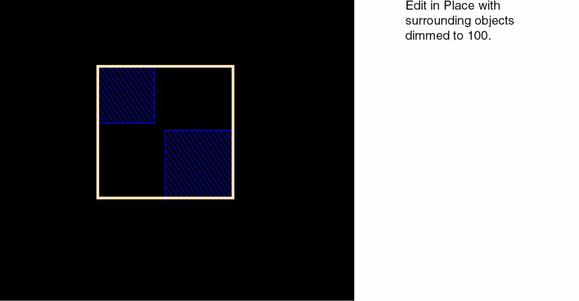

Setting Up Dimming Options
Dimming lets you change the color luminosity of objects in the cellview. The dimming feature lets you differentiate objects in editable context from objects in other contexts. For example, you can dim everything in the design but the objects in the edit cellview, to better view what is currently editable. Dimming settings are associated with the window environment.
- Only one dimming intensity can be set per window.
- When you descend the hierarchy or edit-in-place, the dimming settings from the parent environment are used for the new environment.
- When returning from a descend or an edit-in-place, the dimming settings of the parent environment are restored.
- Choose Options – Display.
- Select Enable Dimming in the Dimming section.
-
Set the Scope cyclic field of the Display Options to one of the following:
- none: Does not apply dimming.
- all: Dims the design completely.
-
outside: Dims upper and lower-level hierarchy and surrounding hierarchy objects outside of the current context. It help you distinguish editable objects from the objects that are in other contexts.
-
eipSurround: Dims only the objects surrounding the EIP hierarchy.
-
Select Automatic Dimming to activate dimming irrespective of the dimming Scope.
Nothing is selected, highlighted, or probed. So nothing is dimmed.
 - Select True Color Selection only to display the selected objects in their original colors and not display their selection highlight.
-
Move the Dim Intensity slider to set the color luminosity of the dimmed objects.
 - Click Apply.
You can also enable dimming by using the Dim icon on the Options toolbar.
Related Topics
Saving, Loading, and Deleting Display Settings
Displaying Details or Outlines of Arrays
Return to top